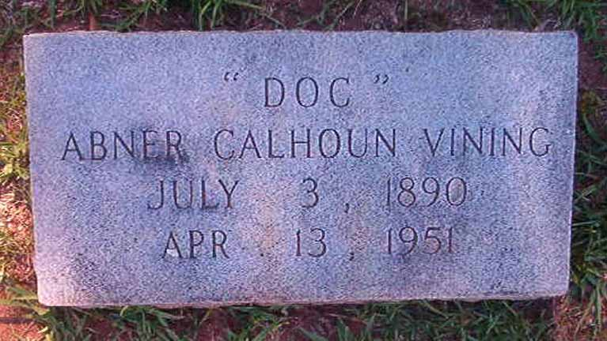
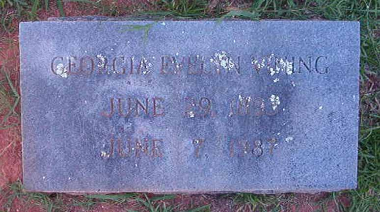

Census Data
| 1920 | 1930 | 1940 | |
| Abner Calhoun Vining | 29 | 39 | 49 |
| Georgia Evelyn ([...]) Vining | 26 | 36 | 46 |
| Herbert Hampton Vining | 8 | 18 | 27 |


Death Data
Gravestones for Abner Calhoun Vining and Georgia Evelyn [...], in Southview Cemetery, Covington, Georgia (from Find A Grave):
